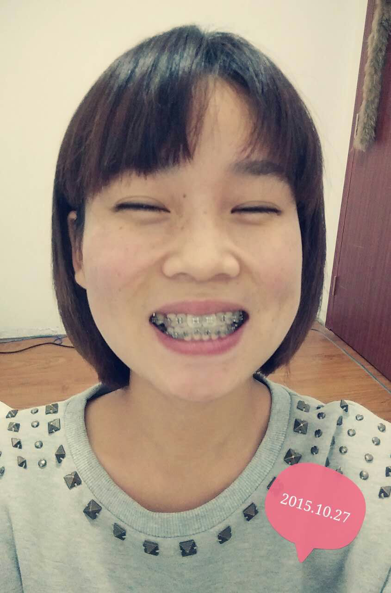
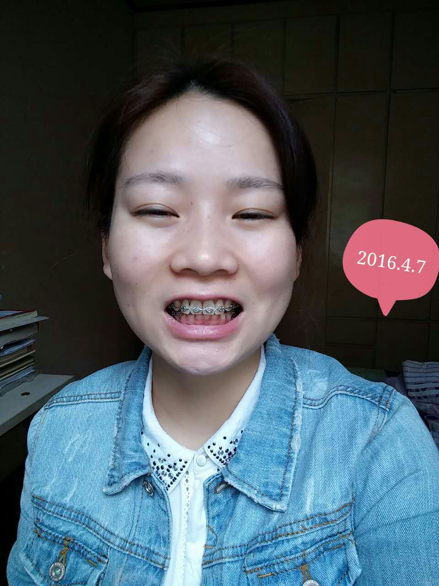
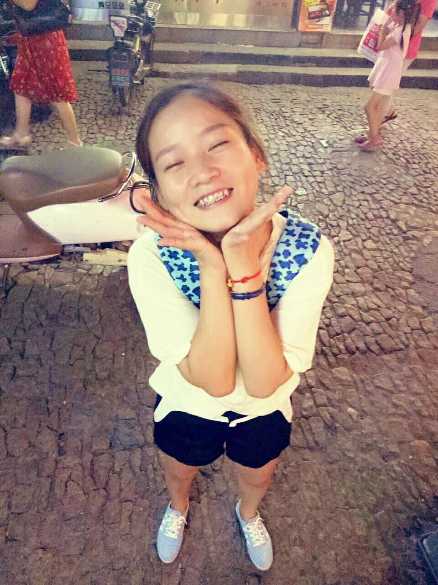
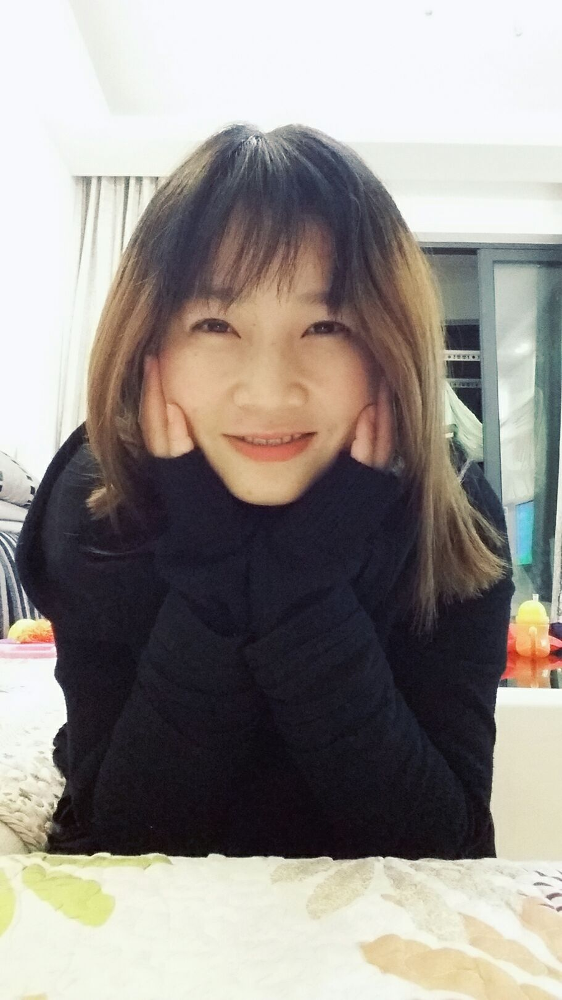

正文: 不请自来。23岁多，不到24……周岁。。目前才戴上牙套两个月。之前也是小龅牙，决定戴牙套的过程很长。很纠结。但是天注定，过程是介个样纸的……我长了一个智齿，很碍事，它往腮帮子方向长，于是我决定把它拔了，这个过程中医生告诉我：少女（？？），你的板牙全部长歪了，要矫正！
哎呀妈呀，正合我意。几次想要矫正，连模型都做好了，片子也拍好了，矫正方案也定好了……我又反悔了。原因很多，要么没钱，要么觉得自己年龄太大了（毕竟还没有男人收下我……），要么害怕老了会牙齿掉光，还有就是很多人说我的牙齿很可爱，不需要矫正……and so on.
既然板牙要矫正，我就大义凛然的说，那就全部矫正吧……于是经历一个月（期间来了一次大姨妈，给耽误了），拔了五颗牙（一颗智齿，四颗好牙）。
原本是在省会城市矫正，但工作是在另一个城市，听说牙套会经常有麻烦，要来回跑，我就毅然决然的在工作城市某医院矫正了。话说某主任好恐怖，从来没见他笑过，，，扯远了。
拔牙过程结束，然后就是分牙缝……哎哟卧槽，现在回忆起来那滋味太，酸，爽，了。此生不想再分第二回。简单的说，就是穿个铁丝在两个牙之间，然后向下合拢拧紧，使牙齿慢慢分开。那几天我就是硬生生的饿着挺过来的，毕竟牙疼和其他的疼不太一样。
分好了牙缝，可以套进去带锁的那个环之后，就开始戴牙套之旅了……吃饭去了先……####
鉴于有人还在点赞，我坚持继续回答吧！其实应该是直播，虽然一向不怎么抛头露面，我决定还是上图比较直观~撒花~[img=547499295b]这是第三个月零10天的样子，看到牙缝没？是在收其他牙缝的过程中，拉出来的牙缝，这才是收缝一个月啊，可见牙齿的移动真的是随时在进行啊~嘴巴可以合拢，就是有点鼓鼓的，像猴子~ ##
20160214，鉴于有人点赞，说明有人还在此道路上有犹豫和不确定，我就就我所能的继续直播吧，帮到一个是一个~
自从开始牙缝开始，我就两个星期复诊一次，因为本身工作自由度比较大，所以复诊从未迟到过。年前2月4号的时候复诊过，医生问我“过年期间是否要停止收牙缝，回去吃点好吃的”。我坚定的摇头，开什么玩笑，本来牙缝就收的够慢了，停什么止，妹子从来都不是个吃货~这次复诊与以往不同，换了牙缝处的皮筋的同时，下牙的门前四顆还缠了铁丝，但是没有一开始收牙缝那么疼了，丝毫没有影响我春节期间的吃喝享受，，（说好的不是吃货呢？~）的
不好意思，嘴里含了巧克力~室友的甜蜜情人节礼物，然而我是单身汪(╯з╰)（不是单身汪就不会在这里更新答案了~）~目前为止，已经矫正3个月零22天#
20160218……妈蛋!今天去复诊疼哭了，眼泪哗哗的，要不是嘴巴还在医生手里（这句话好奇怪……），我就要嚎了！整个过程中，我不停地流泪，医生不停地说：张开……别紧张……（这句话更奇怪！） ~
2016年4月11日，等客户的间隙，来更新~去年摔坏的手机修好了，正好有带上牙套时候的照片，与现在的对比发现，脸型变丑了！！！！牙齿变化还挺明显的，但是，为什么有种还是原来比较可爱点的感觉……
再上近期的变化，目前为止戴了11个月了，昨天去复诊，医生说最后一点点牙缝不急着收，要先调整一下咬合关系，说我的咬合还是有点问题。下面的一张大概是半个月前拍的。医生说我年底就可以去掉牙套了哦~~
上近照，接近尾声了哦，看看变化大不大，其实我觉得颧骨看起来高了，没有以前显嫩了……喜忧参半~
